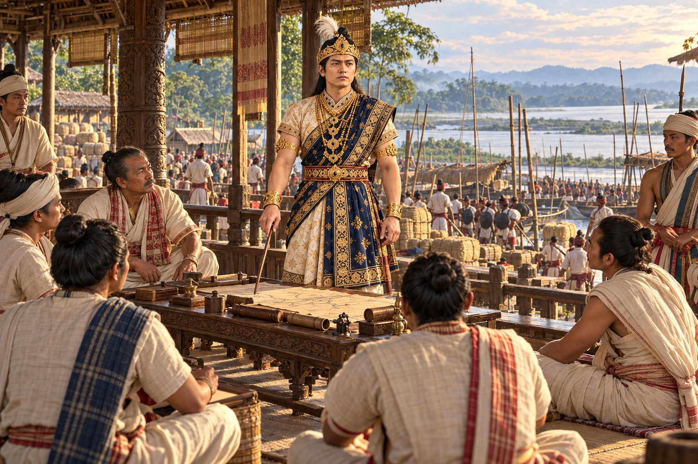

Rudra Singha Plans the Invasion of Bengal
1713 · The Tungkhungia kings

At a general assembly at Rangpur, Rudra Singha announces his plan to invade Mughal Bengal with a league of Hindu rajas, and moves his army to Guwahati.
Depicts preparations for the proposed campaign, which was not launched, rather than a conquest of Bengal. The route sketch is illustrative.
People: Rudra Singha (Sukhrungphaa)